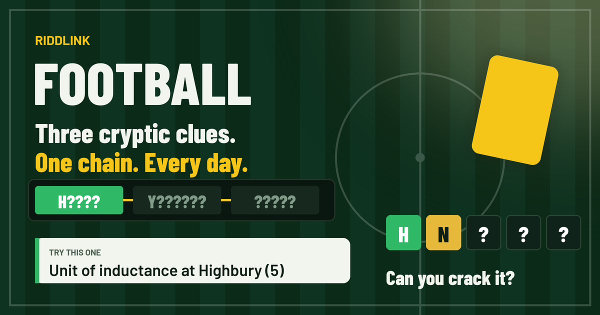

Answers run from 4 to 7 letters. The number in brackets after each clue tells you how many; longer words turn up later in the week.
Three words, linked: the last letter of each answer is the first letter of the next. Crack all three.
Every clue is cryptic: one part defines the answer, the rest is wordplay, such as an anagram ("rearranged", "shuffled"), a hidden word ("found in"), sounds-like, or two meanings at once.
Every answer comes from the working world: projects, procurement, finance, sales and tech delivery. When you finish, you get what each word means.
Clues are proper cryptics: the definition sits at the start or the end, never flagged, and the rest of the clue is trying to mislead you.
Guesses depend on the day: Monday and Tuesday 8, Wednesday to Friday and Sunday 7, Saturday 6. A 7-letter word in the chain earns one extra.
The tiles show how close you are:
A
U
D
I
T
Slate (with a dot): right spot. Amber (with a ring): in the word, wrong spot. Grey: not in the word.
Your guesses cover all three words. Stuck? Each word has three helps: the wordplay type (1 guess), a letter (1 guess) or a plain clue (2 guesses). Guesses left over are your score.
Hard mode One guess fewer (never below 6), no wordplay or plain-clue help
High-contrast colours
Share the game

Posting on WhatsApp, LinkedIn or Facebook? Copy the image too and paste it with your message so it always shows.
Share your result
Challenge a friend
They get the same three words and your score to beat.